基础课各有侧重：Crash Course 介绍领域全貌，3Blue1Brown 用图像解释数学，MIT 和 Stanford 的课程有系统的讲义与作业。
计算机与开发工具
-
英文科普视频，介绍二进制、CPU、程序、操作系统、文件系统与互联网，由 Carrie Anne Philbin 主持。 官方介绍
-
中文计算机自学指南，整理各领域的课程、教材与学习经验。
The Missing Semester of Your CS Education
开发工具课程，讲解 Shell、Git、调试等内容，配有视频和练习。
-
Git 在线教材，涵盖基本操作、历史记录、分支、远程仓库与协作。
数学
-
用几何动画解释向量、线性变换、矩阵乘法与特征向量。 B 站入口
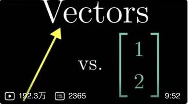
B 站 3Blue1Brown：The Essence of Calculus
微积分视频与图文系列，从微小变化讲到导数、积分与链式法则。
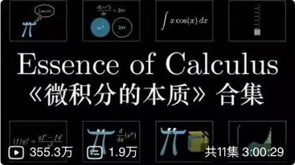
B 站 Seeing Theory — Brown University
概率统计交互教程，展示分布、抽样与统计推断。
MIT 18.06 Linear Algebra — Gilbert Strang
Gilbert Strang 的线性代数课程，涵盖子空间、正交、特征值与 SVD，提供视频、讲义和作业。
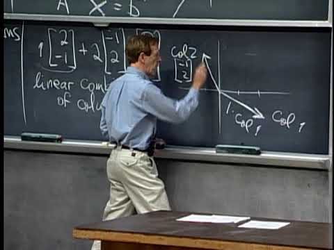
B 站 Harvard Stat 110 — Joe Blitzstein
Joe Blitzstein 的概率论课程，配套教材与练习，涵盖条件概率、期望和常见分布。
Mathematics for Machine Learning
开放教材，将矩阵分解、向量微积分、概率与优化放在机器学习背景下介绍。
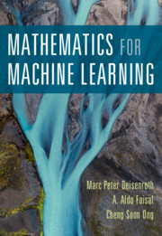
机器学习与深度学习
An Introduction to Statistical Learning
统计学习教材与课程，有 Python、R 版本，讲解回归、分类、泛化、模型选择与重采样。
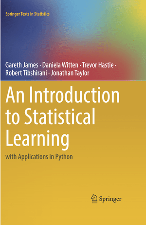
-
中文教材，结合数学、代码与实验讲解线性模型、神经网络、优化和常见深度学习架构。 官方课程索引
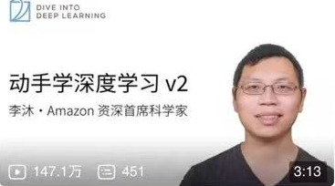
B 站 -
中文视频与课件，结合生成式 AI 讲解机器学习的概念与方法。
B 站 吴恩达：Machine Learning Specialization
机器学习课程，结合 Python 练习讲解监督学习、无监督学习与常用算法。
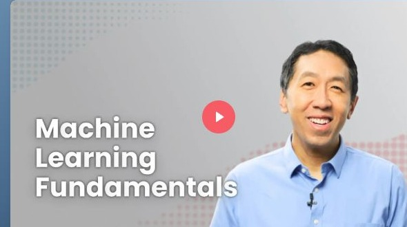
B 站 -
机器学习课程，包含算法假设、数学推导、概率模型与统计学习内容。
Practical Deep Learning for Coders — fast.ai
面向有编程基础读者的实践课程，从训练应用模型展开深度学习方法。
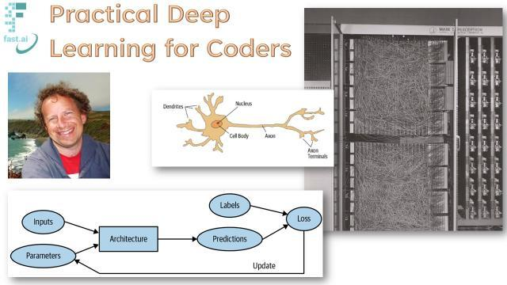
3Blue1Brown：But what is a Neural Network?
以手写数字识别为例，用动画解释神经网络、梯度下降和反向传播。
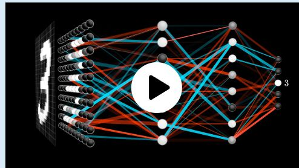
B 站 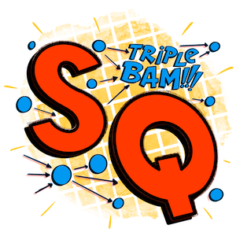
StatQuest with Josh Starmer统计与机器学习讲解视频，包括交叉验证、偏差与方差、树模型等主题。
Python 与模型实现
CS50’s Introduction to Programming with Python
Python 入门课，从函数、条件和循环讲到异常、库、文件读写与测试，配有编程练习。
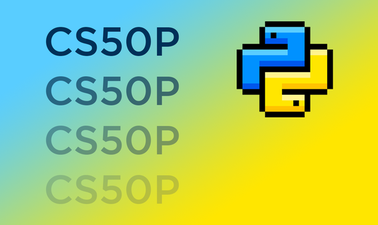
NumPy: the absolute basics for beginners
NumPy 官方入门教程，介绍数组、shape、索引、轴与广播。
-
PyTorch 官方教程，包含数据加载、模型定义、自动求导、优化与模型保存。
Neural Networks: Zero to Hero — Karpathy
从 micrograd 自动求导引擎和字符语言模型开始，逐步实现神经网络、GPT 与 tokenizer。
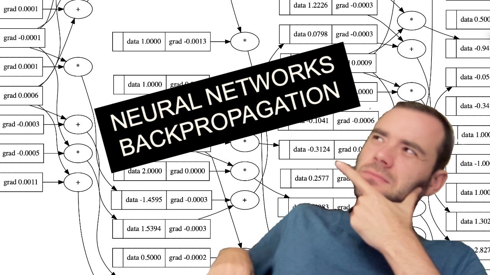
B 站
模型架构与图解
The Illustrated Transformer — Jay Alammar
Transformer 架构图解，解释 token 表示、注意力与 encoder/decoder 的组成。
The Annotated Transformer — Harvard NLP
带逐段注释的 Transformer 实现，将论文中的结构、公式与代码对应起来。
Transformer Explainer — Polo Club
Transformer 交互演示，展示输入经过模型并得到下一个 token 预测的计算过程。
李宏毅：Self-Attention 与 Transformer
机器学习课程中的注意力机制与 Transformer 专题。
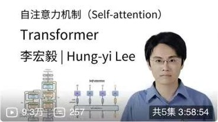
B 站 Understanding LSTM Networks — colah
LSTM 图解，通过状态传递与门控解释序列处理。
-
技术文章归档，包含“Transformer 升级之路”“生成扩散模型漫谈”等系列。
Crash Course AI
科普视频系列，介绍机器学习、自然语言处理、强化学习、机器人与推荐系统。
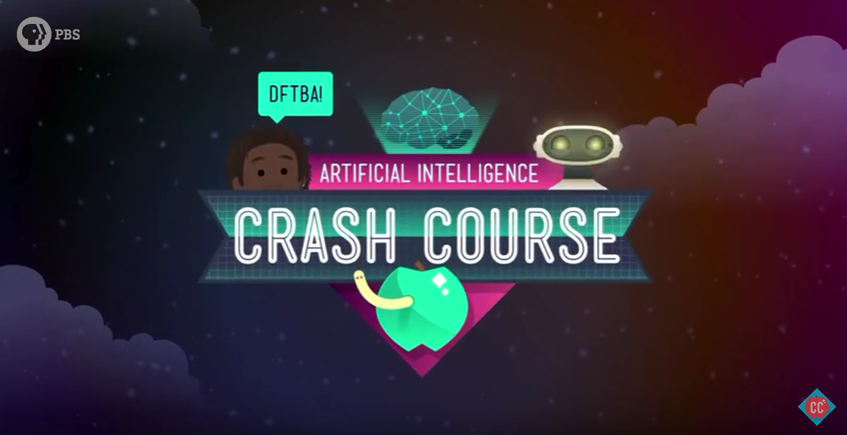
官方课程目录 · 第 1 集：What Is Artificial Intelligence? · 课程预告
相关实践见第一个 AI 项目。